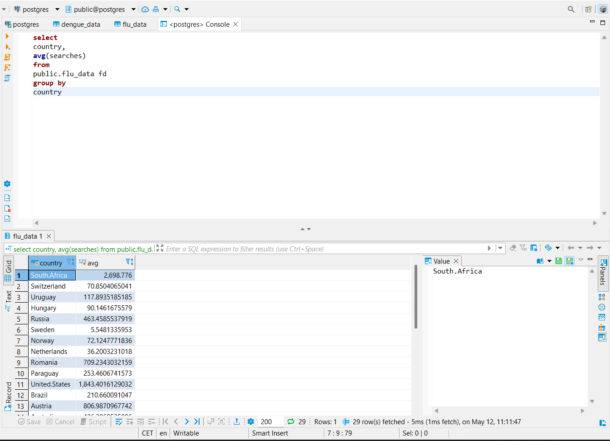
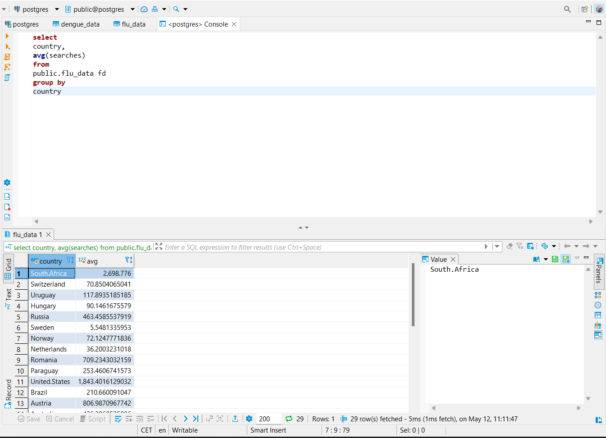

7 Relational databases
Intro
This page is about datasets on flu and dengue occurrences between 2002 and 2015 as measured by Google Webservices “Google Flu Trends” and “Google Dengue Trends”. These webservices track searches of the words flu and dengue in different countries and match them to occurrences of the diseases in these countries. The data will be compared to the “gapminder” dataset that is part of the R package dslabs.
Datasets used:
- Flu data
- Dengue data
- gapminder
Cleaning up
Before any comparisons can be made the data must be tidied and the column types must be matching.
The gapminder dataset is also very large and includes a large number of years not present in the flu and dengue datasets. These years also need to be removed from the dataset.
The next section will show how this was achieved:
# Load the datasets into R datframes
flu_data <- read.csv('data_Raw/007_relational_databases/flu_data.csv', skip = 11) %>% as_tibble()
dengue_data <- read.csv("data_Raw/007_relational_databases/dengue_data.csv", skip = 11) %>% as_tibble()
gapminder <- dslabs::gapminder %>% as_tibble()
# Tidy the flu_data and dengue_data datasets
flu_data <- flu_data %>%
tidyr::pivot_longer(cols = Argentina:Uruguay,
names_to = "country",
values_to = "searches"
)
dengue_data <- dengue_data %>%
tidyr::pivot_longer(cols = Argentina:Venezuela,
names_to = "country",
values_to = "searches"
)
# Match the column types of the datasets
#flu_data <- coltrans(flu_data)
#dengue_data <- coltrans(dengue_data)
gapminder <- gapminder %>%
transform(year = as.character(year))
# Filter gapminder to contain only the years present in the flu and dengue dataseets
gapminder <- gapminder %>%
filter(year %in% c(2002:2015)
)Using DBeaver SQL
Following the cleaning of the data, the datasets need to be saved in R and uploaded to DBeaver for further review using the following commands:
#Save the data in .csv and .rds files
write.csv(flu_data, "data_Raw/007_relational_databases/flu_data_tidy.csv")
write.csv(dengue_data, "data_Raw/007_relational_databases/dengue_data_tidy.csv")
write.csv(gapminder, "data_Raw/007_relational_databases/gapminder.csv")
write_rds(flu_data, "data_Raw/007_relational_databases/flu_data_tidy.rds")
write_rds(dengue_data, "data_Raw/007_relational_databases/dengue_data_tidy.rds")
write_rds(gapminder, "data_Raw/007_relational_databases/gapminder.rds")
#Upload the data to DBeaver
dbWriteTable(con, "flu_data",
flu_data,
overwrite = TRUE
)
dbWriteTable(con, "dengue_data",
dengue_data,
overwrite = TRUE
)
dbWriteTable(con, "gapminder",
gapminder,
overwrite = TRUE
)Uploading files into DBeaver and using the SQL shell to obtain some information about the data
 and using the console to get information from the data:

and using the console to get information from the data:

Joining the data
Getting information from tables and forming them into something useful for visualizing data can also be done using R. The Data needs to be joined together to make good informative figures. The next section shows how this was done followed by a preview of the newly formed table.
flu_data$Date <- as.Date(flu_data$Date)
dengue_data$Date <- as.Date(dengue_data$Date)
flu_data$Date <- as.numeric(format(flu_data$Date, "%Y"))
dengue_data$Date <- as.numeric(format(dengue_data$Date, "%Y"))
flu_data <- flu_data %>% rename(year = "Date")
dengue_data <- dengue_data %>% rename(year = "Date")
flu_data$year <- as.character(flu_data$year)
dengue_data$year <- as.character(dengue_data$year)
# Join the data tables
flu_dengue_data <- full_join(flu_data,
dengue_data,
by = c("country", "year"),
suffix = c("_flu", "_dengue")
)
gap_flu_dengue_data <- inner_join(flu_dengue_data,
gapminder,
by = c("country", "year")
)
knitr::kable(gap_flu_dengue_data %>% head(5))| year | country | searches_flu | searches_dengue | infant_mortality | life_expectancy | fertility | population | gdp | continent | region |
|---|---|---|---|---|---|---|---|---|---|---|
| 2002 | Argentina | NA | NA | 17.1 | 74.3 | 2.38 | 37889443 | 242076212334 | Americas | South America |
| 2002 | Australia | NA | NA | 5.0 | 80.3 | 1.76 | 19514385 | 442135393399 | Oceania | Australia and New Zealand |
| 2002 | Austria | NA | NA | 4.4 | 78.8 | 1.39 | 8114698 | 196998621885 | Europe | Western Europe |
| 2002 | Belgium | NA | NA | 4.4 | 78.2 | 1.68 | 10364613 | 237741668285 | Europe | Western Europe |
| 2002 | Bolivia | NA | 0.101 | 53.7 | 68.7 | 3.98 | 8653343 | 8751510220 | Americas | South America |
Visualising the data
After the data is joined together in one table it can be udes to create some figures:
First by plotting the occurrences of flu and dengue per region to see if they are more common in one region compared to the other.
# plot occurrences of flu and dengue per region
flu_region <- gap_flu_dengue_data %>% ggplot() +
geom_col(aes(x = region,
y = searches_flu,
fill = region)
) +
theme(axis.text.x = element_text(angle = 45, hjust = 1),
legend.position = "none"
) +
labs(title = "Flu searches per region",
subtitle = "Searches of the word 'Flu' per region",
x = "",
y = "Searches"
)
dengue_region <- gap_flu_dengue_data %>% ggplot() +
geom_col(aes(x = region,
y = searches_dengue,
fill = region)
) +
theme(axis.text.x = element_text(angle = 45, hjust = 1),
legend.position = "none"
) +
labs(title = "Dengue searches per region",
subtitle = "Searches of the word 'Dengue' per region",
x = "",
y = "Searches"
)
grid.arrange(flu_region, dengue_region, nrow = 1)
The data shows that dengue is most common in South America and central america. It also has some presence in south-Eastern Asia and Southern Asia but not so much in other regions.
Flu appears to be most common in central america, South America, Eastern Europe, Western Europe and Northern America. Regions where it’s not very common are North- and Southern Europe and South America
The second graph will portray the occurrences of flu and dengue in the Netherlands over the period of 2002 to 2015.
# plot occurrences of flu and dengue in the Netherlands by year
flu_region <- gap_flu_dengue_data %>%
filter(country == "Netherlands") %>%
ggplot() +
geom_col(aes(x = year,
y = searches_flu,
fill = year)
) +
theme(axis.text.x = element_text(angle = 45, hjust = 1),
legend.position = "none"
) +
labs(title = "Flu searches in the Netherlands",
subtitle = "Searches of the word 'Flu' in the Netherlands",
x = "Year",
y = "Searches"
)
dengue_region <- gap_flu_dengue_data %>%
filter(country == "Netherlands") %>%
ggplot() +
geom_col(aes(x = year,
y = searches_dengue,
fill = year)
) +
theme(axis.text.x = element_text(angle = 45, hjust = 1),
legend.position = "none"
) +
labs(title = "Dengue searches in the Netherlands",
subtitle = "Searches of the word 'Dengue' in the Netherlands",
x = "Year",
y = "Searches"
)
grid.arrange(flu_region, dengue_region, nrow = 1)
The flu had its most occurrences in 2009 and 2013 and its least in 2004 and 2010. There is no flu data for 2002. This could be because of a lack of data in these years.
The data shows that Dengue has had no occurrences in the Netherlands between 2002 and 2015.
The third and last graph will show the worldwide occurrences of flu and dengue on a year to year basis. Showing what years these diseases were most common.
# plot occurrences of flu and dengue per year
flu_region <- gap_flu_dengue_data %>% ggplot() +
geom_col(aes(x = year,
y = searches_flu,
fill = year)
) +
theme(axis.text.x = element_text(angle = 45, hjust = 1),
legend.position = "none"
) +
labs(title = "Flu searches per year",
subtitle = "Worldwide searches of the word 'Flu'",
x = "Year",
y = "Searches"
)
dengue_region <- gap_flu_dengue_data %>% ggplot() +
geom_col(aes(x = year,
y = searches_dengue,
fill = year)
) +
theme(axis.text.x = element_text(angle = 45, hjust = 1),
legend.position = "none"
) +
labs(title = "Dengue searches per year",
subtitle = "Worldwide searches of the word 'Dengue'",
x = "Year",
y = "Searches"
)
grid.arrange(flu_region, dengue_region, nrow = 1)
The Flu had its most occurrences in 2009, same as in the Netherlands as shown in the previous graph. The least occurrences were in 2002, 2003 and 2004. This could be because of a lack of data in these years. The rest of the datapoints show only minor peaks.
Dengue had its most occurrences in 2009 and 2010, and the least in 2002, 2003 and 2015. This could also be because of a lack of data in the first, and last few years of the survey.